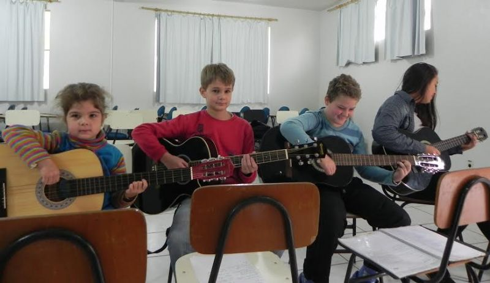

Ministro determina soltura de presos com condenação após 2ª instância e Lula pode ser solto

Flamengo quase ganhou

Crianças tocando em festivais, o próximo será em Corumbá


Mato Grosso do Sul
Ministro determina soltura de presos com condenação após 2ª instância e Lula pode ser solto
A decisão liminar (provisória) de Marco Aurélio Mello atendeu a pedido do PCdoBs